Arkandan Güneş Çizgisi geliyor ve geçtiği yeri yakıyor. Altı kişilik ekiple önce koşarsın. Kuleye varınca onu elinde tutan isyancı madencilerden alır, sonra gece çıkan yaratıklara karşı tutarsın. Beş kule var; sonunda Helion duvarının kapısı.
Pyrelle'de madenciler gezegeni uyandırdı. Her gün bir ışık çizgisi yüzeyin üstünden geçip onu yakıyor. Altı kişi, çizgi yetişmeden Ark'a varmaya çalışıyor.
Dokuz yıl
Helion maden açtı
Helion Deepworks, Pyrelle'in cevherini dokuz yıl boyunca kazdı. Doğu koridoru boyunca eski maden ağızlarının üstüne beş kule-sığınak dikildi: Zincir. İşçiler, mahkûm madenciler ve garnizon orada yaşadı.
Maden kenti ve kuleler (oyunun giriş filminden).
1. – 4. yıl
Yer hareket etmeye başladı
Kazı gezegeni uyandırdı. Depremler başladı, lav püskürdü, gayzerler bir sondajı ikiye böldü. Hatlar tekrar tekrar zarar gördü. Koşarken bunu ayağında duyarsın: zemin sarsılır, çatlaklar açılır, tepeden kaya yağar, askerler savrulur.
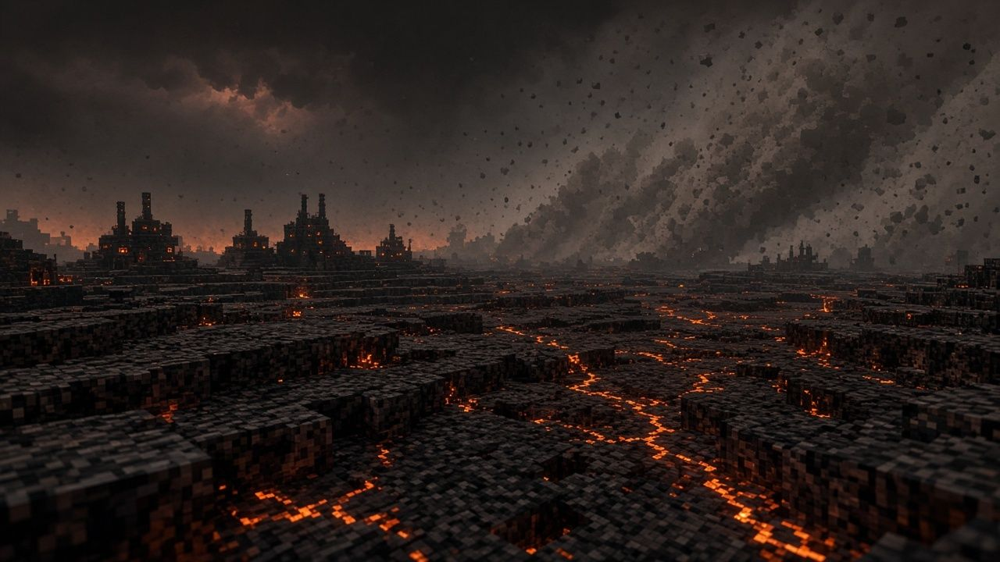
Çatlayan, kül kaplı zemin.
Gece
Alacakaranlıkta uyananlar
Duskborn denen yaratıklar gündüz külün altında uyur, alacakaranlıkta çıkar. Sığınaklar onların yuvalarının üstüne kurulmuştu. Kuleyi savunurken dalgalar gece boyunca ağırlaşır.
Kule ve sürünenler.
Şafak
Cremation Sweep: Güneş Çizgisi
Şafak doğal bir şafak değil. Yörüngedeki aynalar (Şafak Dizisi) yüzeyi batıdan doğuya, saatte 25 km hızla, bir çizgi halinde yakıyor. Çizginin önünde gece, arkasında kavrulmuş gün. Gölgede kalan yaşar.
Yörüngeden yüzeye ışın.
Terk edilen ekip
Altı kişi geride kaldı
Gemiler, ekip dönmeden biraz önce kalktı. Altı kişi terk edildi: VANCE, SARAH, HARRY, SPARKS, CHARLIE ve medik DOC. Hedefleri Helion Dağı'ndaki Ark. Pencere, şafakla birlikte kapanacak.
Helion Dağı ve tepesindeki Ark.
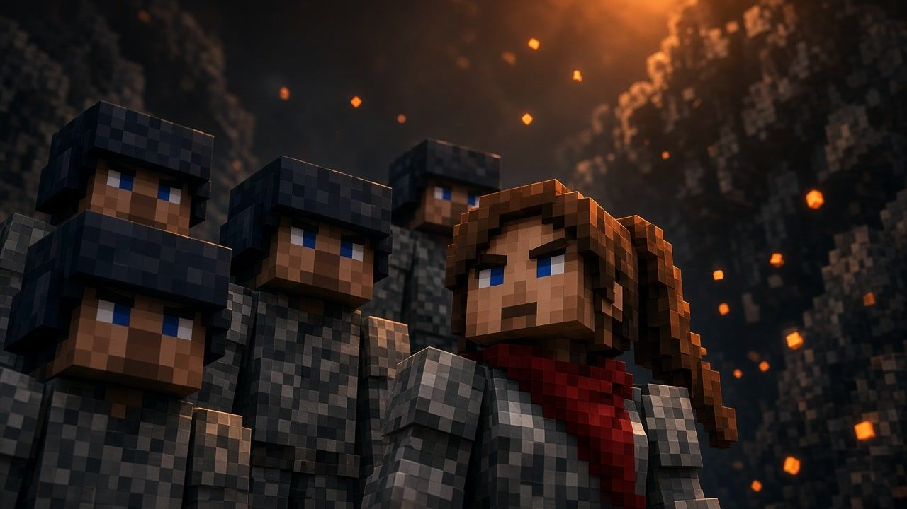
Ekip. VANCE, SARAH, HARRY, SPARKS, CHARLIE ve medik DOC.
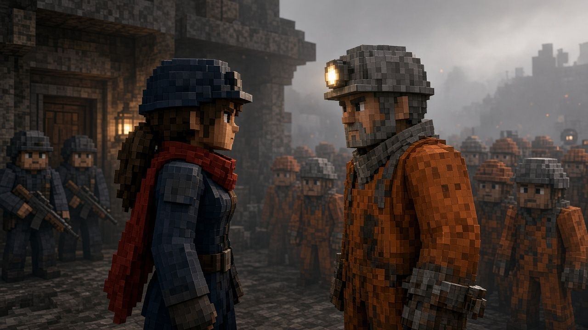
Madenciler. Kuleyi tutunca esirler serbest kalır ve sana eşlik eder.
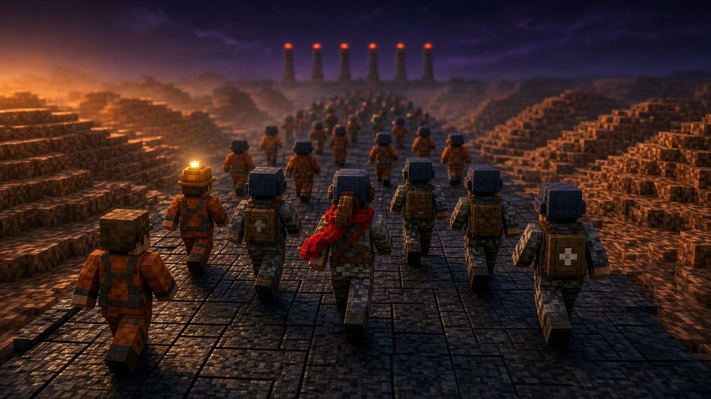
Zincir. Her kulenin ardından bir sonrakine doğru yürüyüş.
Oyun
Koşu, saldırı, savunma
Her kulede aynı altı asker, aynı sırayla üç iş: koş, kuleye saldır, kuleyi tut.
1. Koşu. Güneş Çizgisinin önünde koş. Kaya, çatlak, lav, gayzer ve rüzgâr yolunu keser. Zıpla, kay, W ile hızlan, Tab ile lideri değiştir, E ile "beni takip et" de, yaralıya X ile medik çağır. Altı kişi ölmez; yaralanır ve geride kalır.
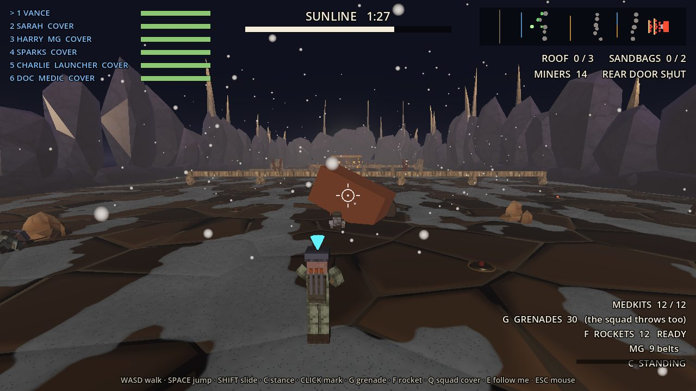
2. Saldırı. Kuleyi isyancı madenciler tutuyor. Siperden siper ilerle, kapıya var. Bomba, roket, mayın, yatma ve emekleme bu bölümde.
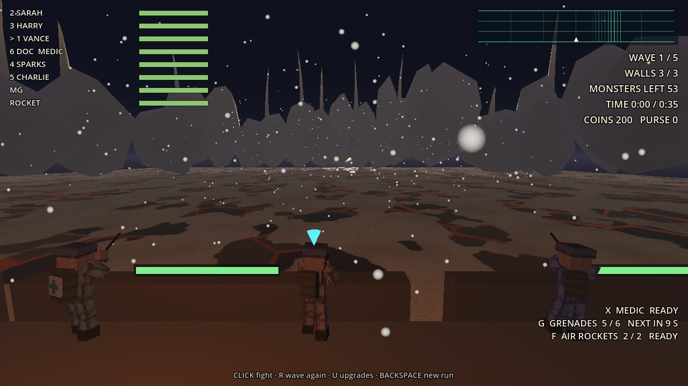
3. Savunma. Kule senin. Beş dalga boyunca duvarları, roketatarı ve makineli tüfeği yönet, gece çıkan yaratıkları durdur, dalga aralarında silahlarını yükselt.
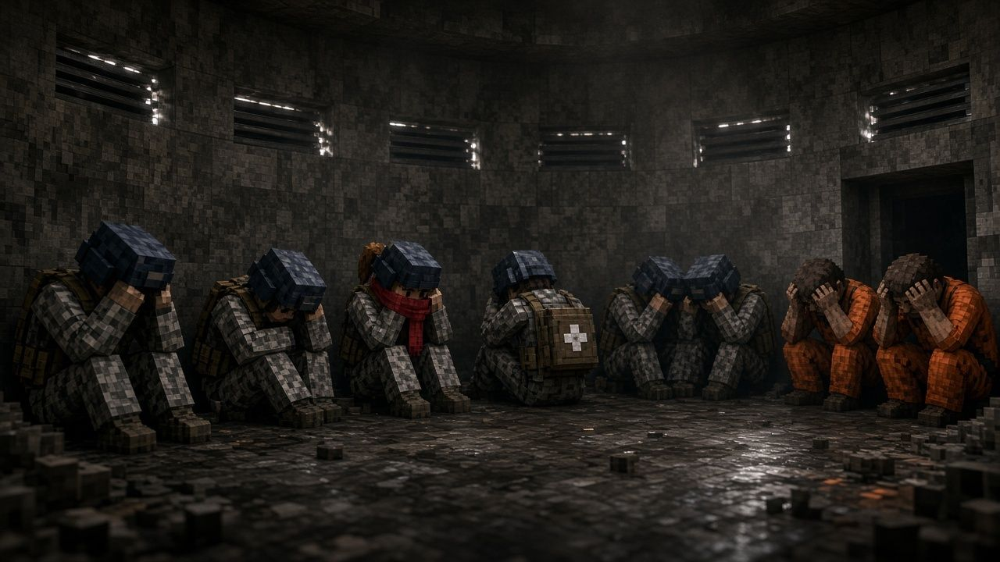
Sığınak. Koşudan sonra doktor yaraları sarar. İsimler her ekranda aynı.
Saldırı ve savunma
Kuleye varınca iş değişir
Kule isyancı madencilerin elinde. Önce onu alırsın, sonra geceye karşı tutarsın.
Saldırı: kuleyi geri al
Ekip sırtı aşıp 150 metrelik açık zemine çıkar. Çatıdaki iki makineli tüfek yuvası ve siperlerin arkasındaki isyancı madenciler ateş eder; arkandan Güneş Çizgisi yetişir, 120 saniyen var. Kayalardan, vagonlardan ve molozdan oluşan üç siper hattını geçip kapıya varman gerekir. Pazardan aldığın roketatar yuvaları susturur, makineli tüfek bastırır, bomba kum torbalarını dağıtır. Mayın var: eğilerek, yatarak ya da emekleyerek geç. Blokhaus düşünce kapı açılır; lider kapıya varınca kule senindir.
Savunma: kuleyi tut
Kule senin olunca yaratıklar çıkar. Beş dalga boyunca duvarlara yürürler. Askerler kendiliğinden ateş eder; sen tehlikeli olanı işaretler, bomba atar, havadakini roketle vurursun. Duvar bölümleri hasar alır ve yıkılabilir. Dalga aralarında silahını yükseltirsin: salvo, bomba, bombacılar, hava roketi. Gece bastırdıkça dalgalar ağırlaşır.
Saldırı. 1 Ashfall bölgesi.Saldırı. 5 Hivegate bölgesi.Savunma. 1 Ashfall bölgesi. "Flyer on the roof!": çatıdaki uçanı vur. Zemindeki yeşil lekeler uçanların asidi.Savunma. 3 Stormspire bölgesi.Savunma. 5 Hivegate bölgesi.
Pazar ve silahlar
Kaçakçı Veyra'nın tezgâhı
Koşu bitince kulenin eşiğinde silah kaçakçısı Veyra Ash-Broker tezgâh kurar. Koşuda topladığın jetonlarla (bir koşuda yaklaşık 200) silah alırsın. Aldıkların askerlerin sırtına ve eline geçer; saldırıda kullanırsın.
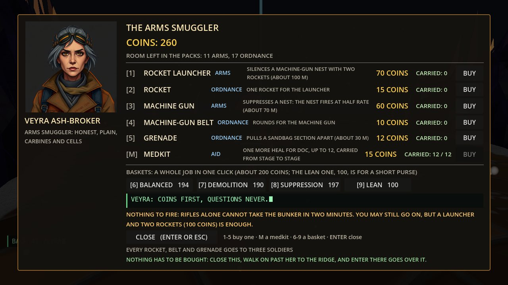
Tezgâh. Roketatar (70 jeton), roket (15), makineli tüfek (60), makineli tüfek kemeri (10), bomba (12) ve medikit (15). 1–5 ile tek tek, M ile medikit, 6–9 ile hazır sepet.
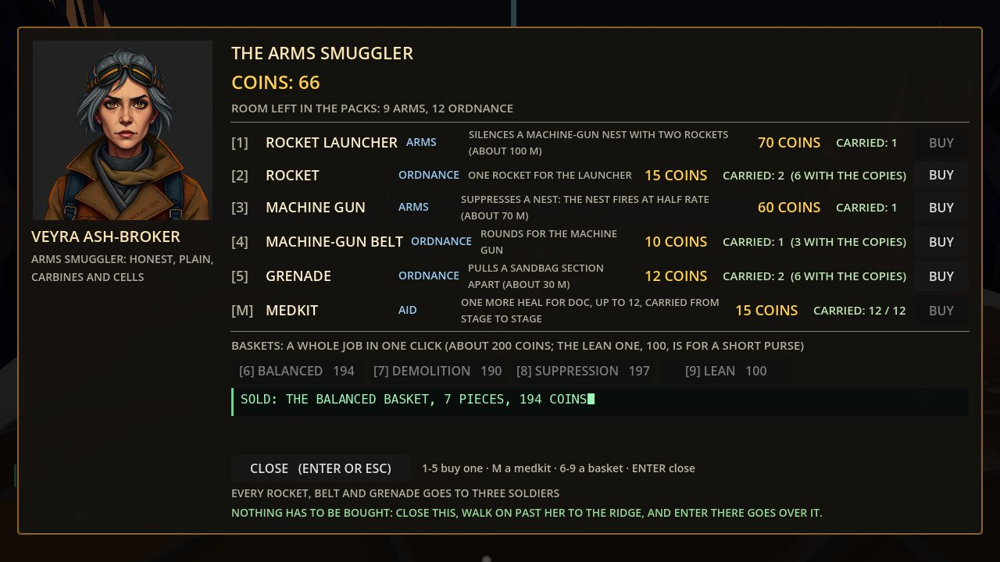
Seçilen silahlar. "Dengeli sepet" alındı: 7 parça, 194 jeton. Her roket, kemer ve bomba üç askere dağıtılır; kim neyi taşıyorsa ekranda yazar.
Roketatar iki roketle bir makineli tüfek yuvasını susturur (yaklaşık 100 m). Makineli tüfek yuvayı bastırır, yarı hızda ateş ettirir. Bomba, kum torbası sırasını dağıtır. Hiçbir şey almak zorunda değilsin: pazarı kapatıp doğrudan saldırıya geçebilirsin.
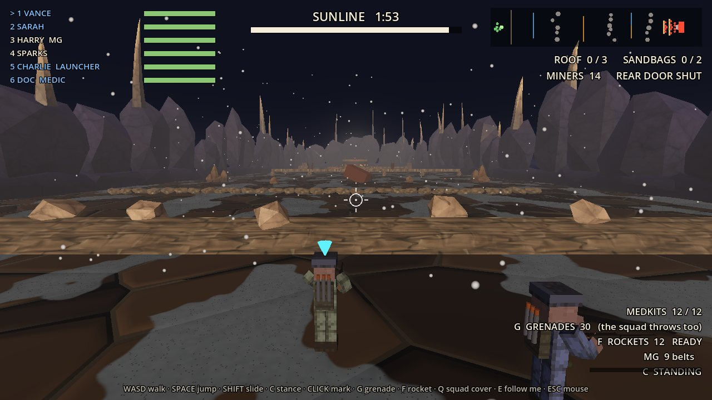
Saldırıda. Aldığın roketatar sahada: roket namludan çıkar, arkadan alev püskürür, hedef blokhaus.
Beş bölge
Her kule başka bir Pyrelle
Koşu, saldırı ve savunma, kulenin bölgesinin zeminini, duvarlarını, gökyüzünü ve havasını giyer. Her kule daha hızlı bir Güneş Çizgisi ve yeni bir bölgeyle gelir. Aşağıdaki her kare gerçek oyundan: bölgeye özel olayların hemen öncesine ışınlanıp kaydettik. Üzerine gelince oynar.
Koşu. Bölgenin ilk metreleri.Medik. DOC, düşen HARRY'ye koşar; iyileştirme yüzdesi ekranda yükselir, bitince "HARRY IS PATCHED UP" yazar. X ile çağırırsın.Kaya yağışı. Vadinin duvarlarından kaya yağar; ekip düşenlerin arasından geçer.Deprem ve kaya. Vance "Quake!" diye bağırır; zemin çatlar, lav kabuğu çıkar, ekranda "BOULDER AHEAD" yazar ve toz kalkar.Deprem. Zemin sarsılır, toz kalkar, çatlaklar açılır; ekranda "EARTHQUAKE" yazar.
2 · Glasswind
Cam kum, ısı titremesi, sarı-turuncu gök. Zeminde lav ve gayzer ağızları var.
Koşu. Bölgenin ilk metreleri.Lav ve gayzer ağızları. Yoldaki ağızlar patlar; yakalanan askerler kanar (üstte "IS BLEEDING" yazar), doktor yetişirse sarılır.Cam kumu rüzgârı. Vance "Cover on our right!" diye bağırır; ekip siperlerin arkasına geçer. Rüzgâr askerleri yana iter, havadaki daha çok savrulur.Yuvarlanan kaya. Ekibin yoluna kaya yuvarlanır.
3 · Stormspire
Yüksek sırt, mor-çelik gök, yıldırım. Rüzgâr burada en sert.
Koşu. Bölgenin ilk metreleri.Kaya yağışı. Sırttan kopan kayalar ekibin önüne düşer.Deprem. Sırt sarsılır; toz ve küçük taşlar yağar.Fırtına. Ekip rüzgâra karşı koşar; rüzgâr yana ve geriye iter.
4 · Sporeroot
Yeraltı galerisi, mantar ışığı, sis. Havada rüzgâr yok, ama tavandan kaya düşer.
Koşu. Bölgenin ilk metreleri.Kaya yağışı. Galerinin tavanından kayalar düşer.Deprem. Galeri sarsılır; spor bulutu ve toz yükselir.Patlayan ağız. Zeminden bir ağız patlar; yakınındaki asker yaralanır.
5 · Hivegate
Reçine duvarlar, bakır sıcaklık, buhar. Kovanın kapısına en yakın bölge.
Koşu. Bölgenin ilk metreleri.Bakır koridor. Hivegate'te reçine duvarların arasından, yolun üstündeki sıcak ağızlara doğru koşulur.Deprem. Reçine duvarlar sarsılır; zemin çatlar.Sıcak nefes. Kovandan gelen sıcak rüzgâr ekibi iter, kıvılcım taşır.
Emek
En çok emek verdiğimiz üç şey
Gezegenin davranışı, askerlerin bedenleri ve ikisini taşıyan altyapı.
Depremler ve doğa
Zemin sarsılır, çatlar ve askerleri fırlatır
Depremler gerçekten sarsar. Askerler daha sık düşer, vadi duvarlarından toz ve taş yağar, yerde çatlaklar açılır ve onları atlamak gerekir. Lav kendi kendine çıkmaz: yalnızca bir depremin açtığı çatlaklardan, onun ardından sızar. Gayzer ve lav fışkırmaları askerleri 3 metreye kadar fırlatır. Düşerler, yuvarlanırlar, kalkarlar ve sendeleyerek koşmaya devam ederler.
Rüzgârı ısı doğurur: geceleri vadilerden süzülen hava, camın ve sırtların karıştırdığı akım, Güneş Çizgisinin fırlattığı yangın. Hepsi askerleri yana iter, havadakini daha çok, ve kıvılcım taşır. Kül düştüğü yerde yığılır. Çizgi dokunduğu yerde patlama ve yangın bırakır.
Patlayan zemin (giriş filminden).
Blockbench ile figürler
Her asker, tek bir iskeletin üstünde
Askerleri Blockbench'te Minecraft-deri biçiminde modelledik: on üç kemikli bir iskelet (diz, dirsek, omurga ve boyun dahil), glTF olarak oyuna girdi. Bir shader her askere kendi renk, ıslaklık ve ısı değerini verir. Kırk figürlük laboratuvar ölçümünde iskeletli asker, kutu askerle aynı maliyette çıktı.
Koşu, zıplama, kayma, düşme, yuvarlanma, kalkma, yanma, nişan alma ve medik iyileştirmesi için 29 klip ve prosedürel pozlar var. Oyunda mahkûm madenciler, ustabaşı, sürünen yaratık, uçan tükürücüler ve bir boss var. İri ve kanatlı yaratıkların yeni modelleri konsept aşamasında. Aynı iskelet iki görünümde de çalışıyor (aşağıda).
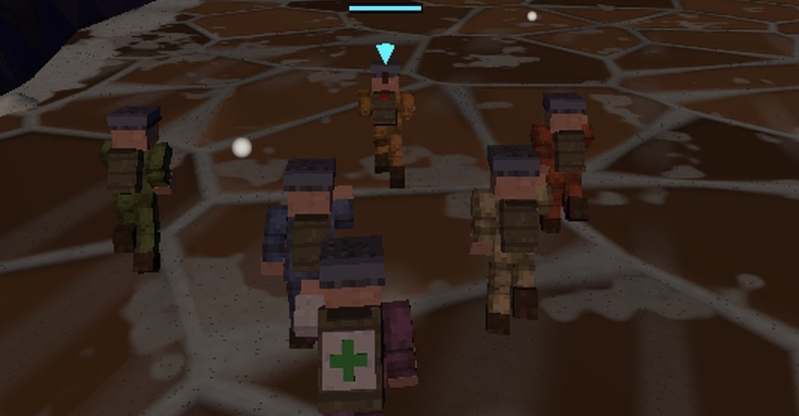
Koşan ekip, oyun içinden. Sırtında yeşil artı olan DOC.
Altyapı
Aynı tohum, aynı koşu
Oyun Godot 4.7 ile yazıldı (GDScript). Apple Silicon'da Metal, Intel Mac'te MoltenVK, Windows'ta Vulkan ile çizer; Vulkan yoksa DirectX 12'ye düşer. Her koşu bir tohumdan üretilir: aynı tohum aynı araziyi, engelleri ve tehlikeleri getirir. Her bölge bir veri kümesidir: zemin, gök, hava, ışık ve kül oranı tek yerden okunur. Koşu, saldırı ve savunma aynı bölgeyi giyer.
Yüzü aşkın otomatik test var. Botlar koşuyu ve sahaları oynayıp kare süresini, çizim çağrısını ve parçacık sayısını ölçer. Her bölümü gerçek pencerede bir kalite turundan geçiriyoruz; bu sayfadaki görüntüler o turdan. Değişiklikleri küçük dilimlerle yapıyoruz, yaratıcı yönetmen, kalite yöneticisi ve yapıcı rollerini yapay zekâ ajanları üstleniyor. Windows ve macOS paketi tek komutla çıkıyor.
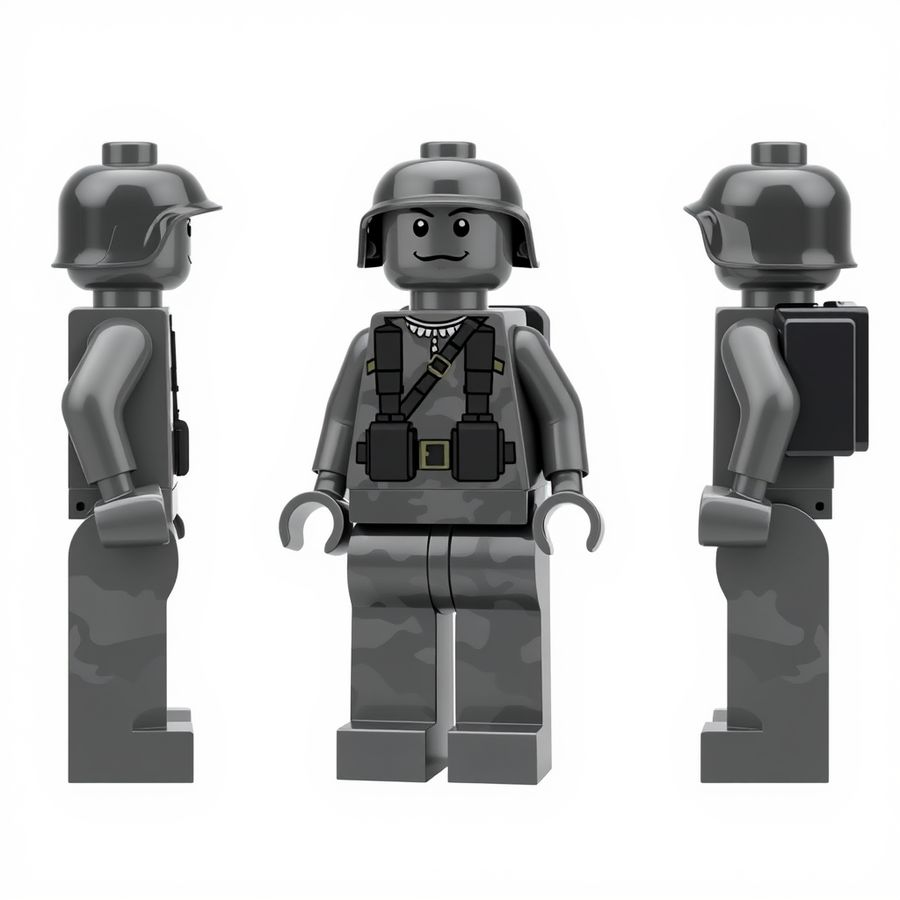
Askerin konseptinden: üç görünüş.
İki görünüm
Minecraft ya da Lego: F10 ile değiştir
Koşu sırasında F10'a bas: bütün ekip diğer görünüme geçer. İskelet ve hareketler aynı kalır; kıyafet, kafa ve malzeme değişir. Tuş şimdilik yalnızca koşuda çalışıyor.
Minecraft görünümü (varsayılan). Kutu gövdeler, desenli kamuflaj, mat kumaş. Islanınca kumaş koyulaşır ve maviye kayar.
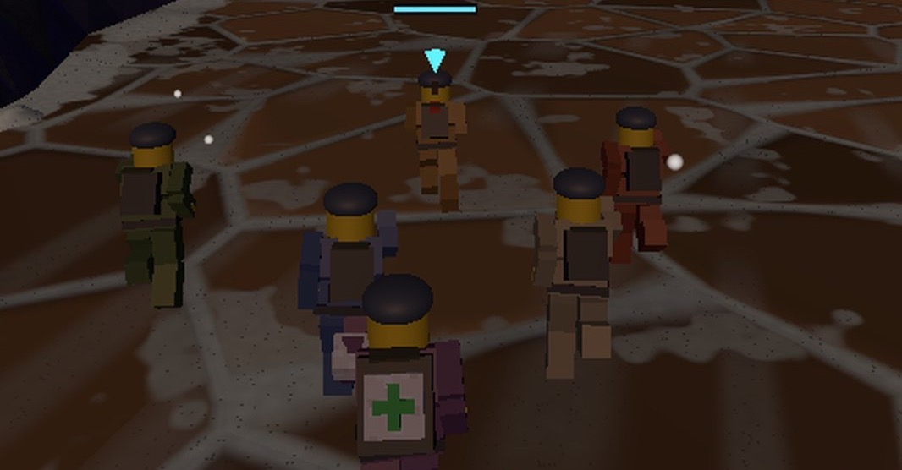
Lego görünümü. Silindir kafa, sarı eller, düz renkli plastik gövde. Plastik artık daha mat: arkadan gelen şafak ışığı sırtlarda ve botlarda beyaz levha bırakıyordu, düzelttik.
Filmler
Sahneler arası kısa filmler
Hikâye, yapay zekâ ile üretilmiş kısa filmlerle ilerliyor: giriş, çıkış, kuşatma ve madencilerin yürüyüşü. Dört kesit aşağıda; üzerine gelince oynar.
Çıkış. Ekip sığınaktan çıkar, koşu başlar.Yürüyüş. Tutulan kuleden sonra madenciler ekibe katılır.Kuşatma. Şafak çizgisi sığınağın üstünden geçerken.Esirler. Sığınağın altındaki çukurda madenciler.
Yapılanlar
Bugüne kadar neler var
Bu alpha, beş kule boyunca Helion duvarının kapısına kadar oynanabiliyor.
Koşu
Güneş Çizgisinin önünde koşu: kaya, çatlak, lav, gayzer, rüzgâr ve yağan taşlar.
Zıplama, kayma, hızlanma ve lider değiştirme; düşme, yuvarlanma ve kalkış hareketleri.
Beş bölge; her birinin kendi zemini, göğü ve havası var.
İskeletli askerler; F10 ile Minecraft ve Lego görünümü (koşuda).
Saldırı ve savunma
Saldırı: 150 metrelik açık zemin, üç siper hattı, çatıda iki makineli tüfek yuvası, siperlerin arkasında isyancı madenciler; bomba, roket, mayın, yatma ve emekleme.
Savunma: beş dalga, duvar bölümleri, uçan tükürücüler, beşinci dalgada bir boss; roketatar, makineli tüfek ve silah yükseltmeleri.
Her iki sahne de kulenin bölgesinin zeminini ve havasını giyer; patlamalar iz bırakır.
Zincir ve hikâye
Beş kule arka arkaya; giriş, çıkış, kuşatma ve yürüyüş filmleriyle bağlı.
Tutulan kuleden sonra mahkûm madenciler ekibe katılır, önde koşar ve tehlikelerde ölür.
Sığınakta doktor yaraları sarar, Veyra'dan silah alınır. İsimler her ekranda aynı.
Yapay zekâ ile üretilmiş ses ve kısa filmler.
Sırada
Sonra ne geliyor
Alpha'nın bittiği yer, hikâyenin ortası. Geri kalan yol:
Yakında
Helion duvarı tırmanışı: beşinci kuleden sonra kapıdan geçip duvara tırmanış.
Kül Kraliçesi ve kovanın kapısı (Hivegate) finali.
Kanatlı ve iri yaratıkların yeni modelleri (aşağıdaki konseptler) oyuna giriyor.
Alpha geri bildirimlerine göre hata düzeltmeleri ve denge ayarı.
Sonra
Dağdaki Ark'a varış, göktaşı ve plazma gemisi kaçışı.
Uzay istasyonu finali.
Başlık ekranı, zorluk seçimi ve skor tablosu.
İmzalı Windows ve macOS paketleri, ses ve müzik cilası.
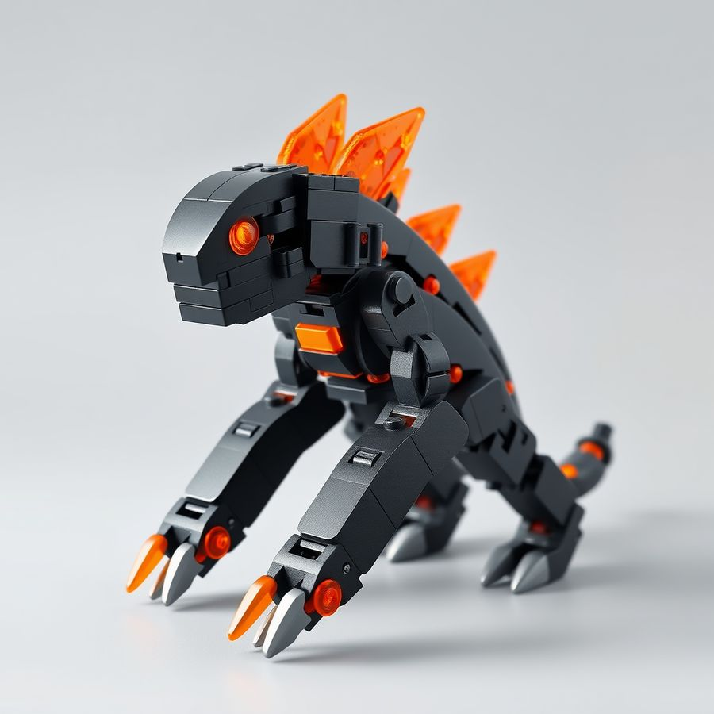
Sürünen (oyunda; savunmada uçan tükürücüler de var).
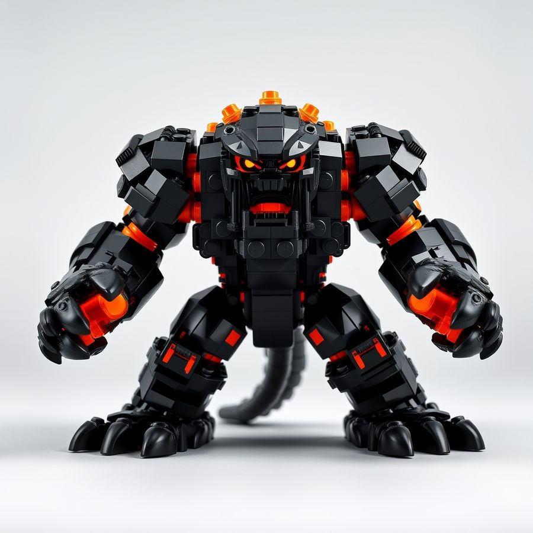
İri yaratık (yeni model, konsept).
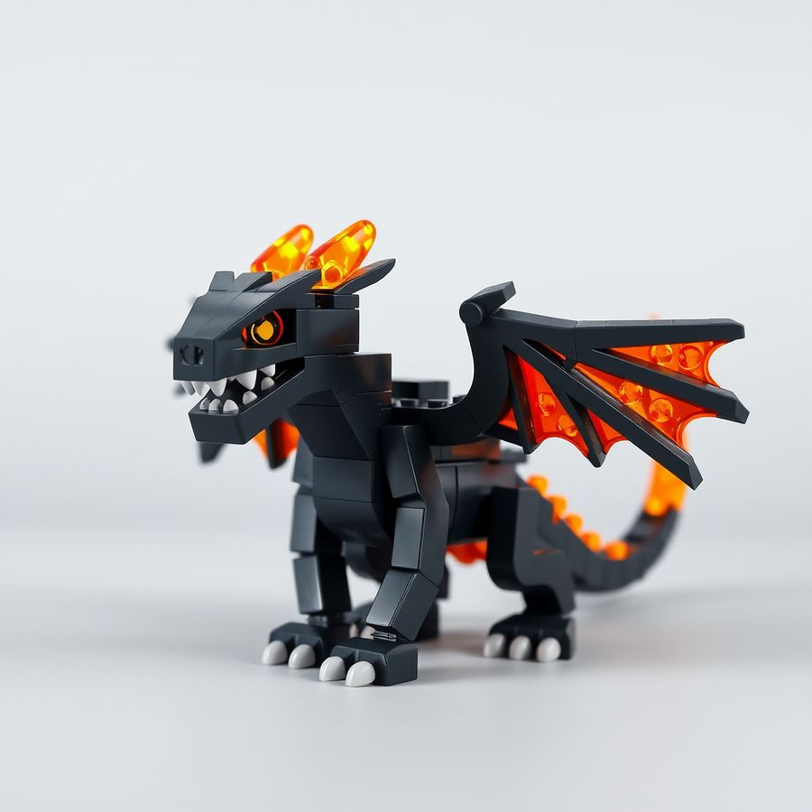
Kanatlı (yeni model, konsept).
İndir
Alpha
Bu sürümde: paket artık oyunun kendi okuduğu model dosyalarını taşıyor. alpha.3 ve öncesinde askerin iskelet modeli, lav ağızları, çatlaklar, sandıklar ve yaratık modelleri pakete girmemişti; oyun bunları bulamayıp onlarsız çalışıyordu. Eski bir sürümü indirdiysen yenisini indir. Lego görünümünde sırtlardaki beyaz levha da gitti. Önceki sürümde düzelenler: düşen askerin etiketi ekranı kaplamıyor, kule sütunu görüşü kapatmıyor, Veyra ekranı 720p'ye sığıyor, Veyra'ya dönüşte görev brifingi tekrar çalmıyor, film ile koşu arasındaki ses sıçraması azaldı.
Bu bir alpha: hata, eksik ses ve kaba görünüş olabilir. Oyun Helion duvarının kapısında biter, tırmanış henüz yok. Yalnızca davetliler için, paylaşma. Denediğin için sağ ol.
İndirme bağlantıları henüz açılmadı. Birazdan tekrar bak.
Dosyanın bozulmadığını görmek istersen: SHA-256 değerleri SHA256SUMS.txt içinde.
Kurulum
İlk açılış
Windows
Zip'i bir klasöre çıkar (zip'in içinden açma).
CremationOutrunTheDawn.exe dosyasına çift tıkla.
"Windows bilgisayarınızı korudu" uyarısı çıkarsa: Ek bilgi, sonra Yine de çalıştır. Oyun imzalı değil, bu normal.
macOS
Zip'e çift tıkla, CremationOutrunTheDawn.app çıkar. Masaüstüne ya da Uygulamalar'a taşı.
Uygulamaya çift tıkla. macOS "Apple tarafından denetlenemediği için açılamıyor" der: oyun Apple'ın noter onayından geçmedi, alpha için bu normal. Tamam'a bas.
Terminal'i aç, xattr -dr com.apple.quarantine yaz (sonunda boşluk kalsın), uygulamayı Terminal penceresine sürükle, Enter'a bas. Başarılı olursa hiçbir şey yazmaz. Sonra uygulamaya tekrar çift tıkla. Bu tek seferlik.
Terminal istemezsen: Sistem Ayarları, Gizlilik ve Güvenlik'te aşağıda "CremationOutrunTheDawn engellendi" yanında Yine de Aç'a bas, şifreni gir. Bazı sürümlerde bu düğme çıkmıyor; o zaman Terminal yolunu kullan. (macOS 15'ten beri sağ tık, Aç işe yaramıyor.)
Sistem gereksinimleri
Windows
Windows 10 / 11 64 bit, Vulkan ya da DirectX 12 destekleyen ekran kartı (yaklaşık 2016 ve sonrası: GTX 900, RX 400 ve üstü, Intel Iris Xe), 8 GB RAM, 1 GB boş alan. Geliştirici Windows'ta henüz denemedi: ilk deneyen sensin.
macOS
Apple Silicon (M1 ve üstü), güncel macOS, 8 GB RAM, 1 GB boş alan. Geliştirici Apple Silicon üzerinde ve güncel macOS'ta denedi. Intel Mac'te ilk deneme başarısız: 2015 model MacBook Pro'da (Intel Iris 6100, macOS 12) oyun açılışta çöküyor; çökme, ekran kartı sürücüsünün bellek ayırma adımında (Metal, MTLHeap) oluyor. Daha yeni Intel Mac'ler denenmedi. Çöken bir Mac'in varsa raporunu bana gönder.
Ekran
1280×720 ve üstü, fare ve klavye. Oyun pencereli açılır, pencereyi büyütebilirsin.
Kontroller
Koşu
AD yön · W hızlan · S geriye bak · Boşluk zıpla (basılı tut: yüksek) · Shift kay · Tab lideri değiştir · E "beni takip et" · X sağlık çantası · R yeniden başlat (iki kez bas)
Saldırı
WASD yürü · fare nişan al · sol tık hedefi işaretle · sağ tık ya da G bomba at · F işaretli yuvaya roket · Q ekibi nişan aldığın siperin arkasına gönder · E ekibi geri çağır · C eğil, yat, kalk · Boşluk engeli aş · Shift kirişin altından kay
Savunma
Fare nişan al · sol tık hedefi işaretle · sağ tık ya da G bomba at · F hava roketi · X düşen asker varken medik · Tab komutanı geri al. Ekrandaki ipucu satırı tuşları gösterir.
Bir sorun olursa
Ne yaptığını, ne beklediğini ve ne olduğunu akekilli@gmail.com adresine yaz (ya da seni davet eden kişiye); mümkünse ekran görüntüsü ve günlük (log) dosyasını ekle. Günlük dosyası:
Windows: %APPDATA%\Godot\app_userdata\Cremation - Outrun the Dawn\logs\godot.log
macOS: ~/Library/Application Support/Godot/app_userdata/Cremation - Outrun the Dawn/logs/godot.log